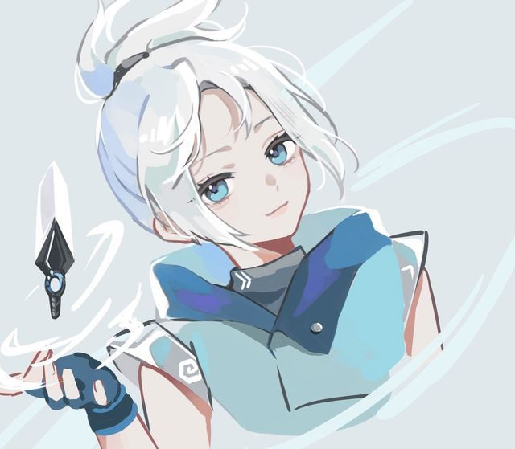
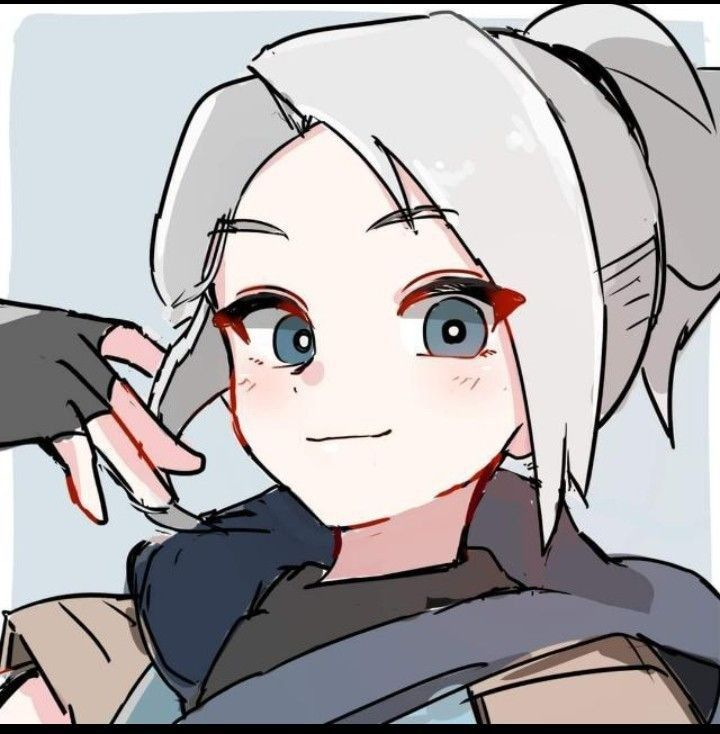
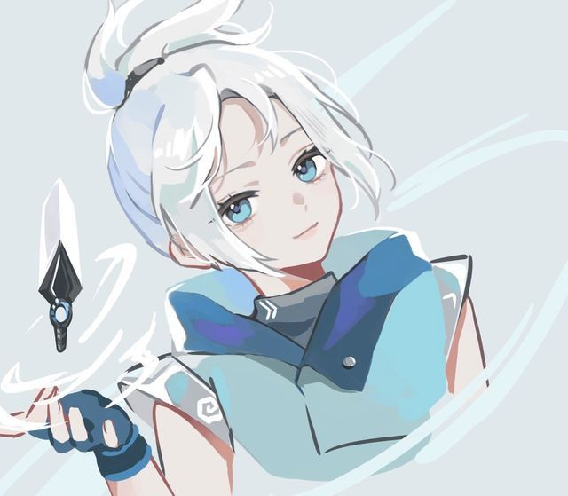
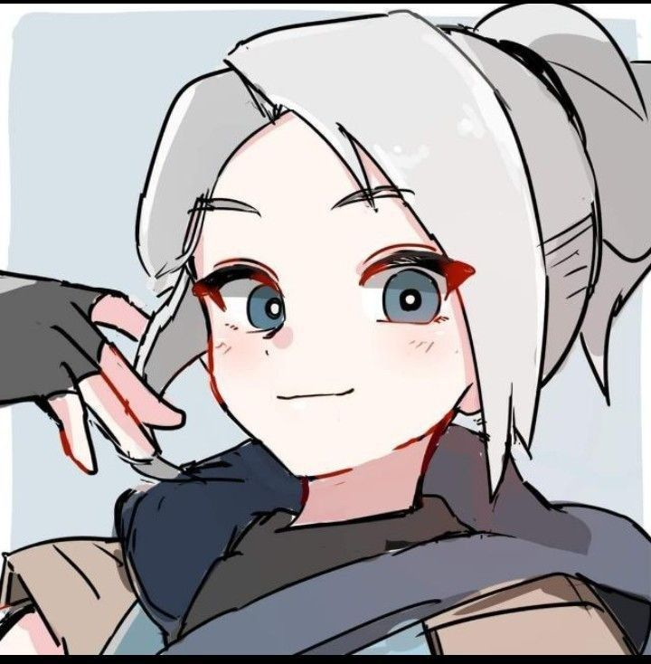

Jett
Jett é uma duelista ágil de origem sul-coreana, conhecida por sua velocidade e movimentos aéreos. Ela é ideal para jogadores que gostam de estilo agressivo, entradas rápidas e jogadas ousadas.
Lança Jett para o alto, útil para pegar ângulos inesperados ou fugir rapidamente.
Um dash (impulso) rápido na direção atual, ideal para entrar ou sair de situações perigosas. Pode ser recarregado com eliminações.
Arremessa uma fumaça que bloqueia a visão brevemente. Pode ser curvada ao manter pressionado o botão.

Jett equipa facas flutuantes altamente precisas. Causa dano alto e é recarregada com abates.

 


